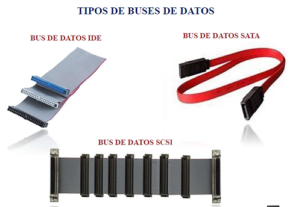

BUSES DE DATOS Y PUERTOS
¿Qué es?
Un bus de datos es un dispositivo mediante el cual al interior de una computadora se transportan datos e información relevante. Su funcionamiento es sencillo: en un bus, todos los distintos nodos que lo componen reciben datos indistintamente, aquellos a los que estos datos no son dirigidos los ignoran y, en cambio, aquellos para los cuales los datos tienen relevancia, los comunican. Desde el punto de vista técnico, un bus de datos es un conjunto de cables o conductores eléctricos en pistas metálicas sobre la tarjeta madre o "mother" del ordenador. Sobre este conjunto de conductores circulan las señales que conduce los datos.
Características
Un bus se caracteriza por la cantidad de información que se transmite en forma simultánea. Se expresa en bits y corresponde al número de líneas físicas mediante las cuales se envía la información en forma simultánea.
Tipos:
Fuentes de alimentación de AC-DC
En informática, un puerto es una interfaz a través de la cual se
pueden enviar y recibir los diferentes tipos de datos. La
interfaz puede ser de tipo física o de software, en este caso se
le denomina ‘’puerto lógico’’. Se denomina “puerto lógico” a una
zona o localización de la memoria de acceso aleatorio (RAM) de
la computadora que se asocia con un puerto físico o un canal de
comunicación, y que proporciona un espacio para el
almacenamiento temporal de la información.
Existen diferentes tipos de puertos: